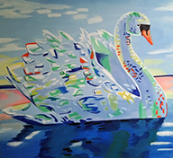
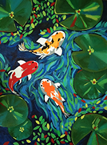

Swan
I stumbled discovered this drawing while browsing Pinterest.
Swans symbolise elegance, beauty, love, trust, and loyalty.
Swans are also associated with inner beauty and self-love.

Fishes in the pond
The higher-self, sentiments, and impulses are represented by fish.
It's also a metaphor for higher levels of consciousness, as well as
intelligence and cognition.

A broken girl
To me, this drawing has a great deal of significance. Even when we are damaged,
we lose faith in others and believe the universe is conspiring against us.
Everyone possesses this aura that reminds individuals that the greatest is yet to come.